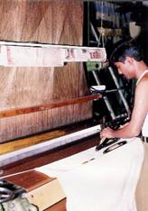

|
|
Silk
market in India
Domestic market of silk fabric in India is chiefly depending on production of sarees and grey
cloth totaling to over 270 million metres. Consequently,  an annual demand of about 25000 M.T. of raw silk has been created
to meet both local and export demands. At present India is producing 16000 M.T. of silk and thus 7000 M.T. raw silk is
being imported to meet the demand of local market and export. At one time all
the silk produced in the country were utilized by the handloom sector.
But now due to shift in the demand,
powerloom has come forward to produce finer and quality fabrics and is able
to consume about 60% of the
total silk. Most of the power-looms are using imported yarn as
warp, while silk produced locally (reeled in Charkha and cottage basin) is
being used as weft. Presently, there are around 1,79,000 handlooms and 29,000
powerlooms in the country accounting
for the production of around 1.94 million square meters of silk fabric. The
increased production of silk using powerloom has also created an urgent
demand for better quality yarn. Many handlooms and Jacquard looms are also
using imported silk as warp to improve their efficiency.
Back
|